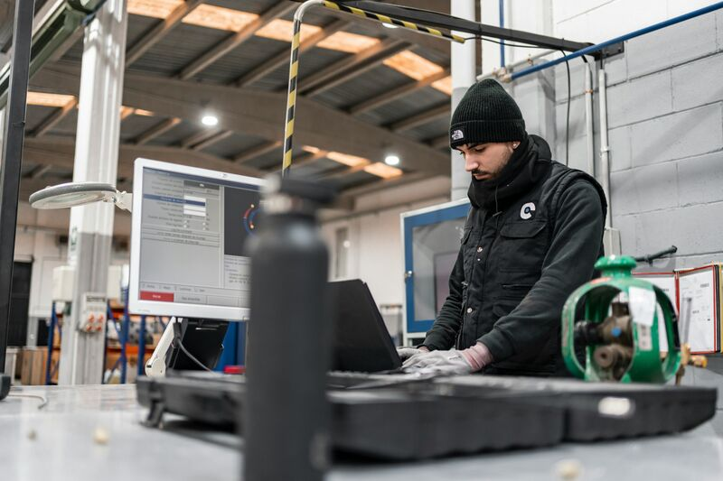
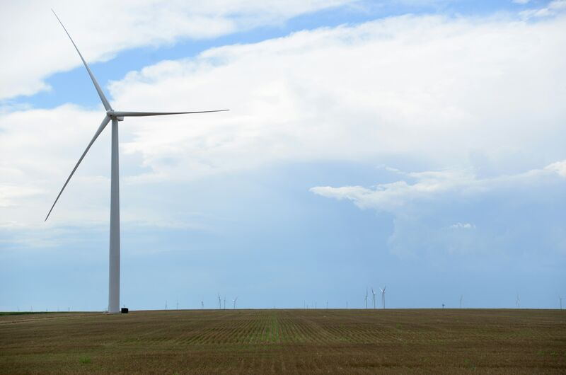

Field notes on how innovation actually gets built: through infrastructure, workforce, AI, partnerships, and the connective tissue between them.

A practical framework for designing AI-enabled Registered Apprenticeship pathways with one federal standard, two entry points, and one credential.

A place-based thesis on why the Heartland is structurally advantaged for building the next systems of infrastructure, workforce, governance, partnership, and trust.
Future essays will continue exploring the systems leaders must connect before transformation can scale:
Tonya is regularly invited to speak, write, and advise on the convergence of infrastructure, workforce, AI, and regional innovation.
Plenary speaker on workforce, AI, and the heartland innovation economy
National panel on AI-era apprenticeship frameworks
Keynote on cybersecurity workforce and SMB compliance pathways
Panel on applied learning and the future of higher ed–employer partnerships
Briefing on state-level AI workforce strategy
Regional innovation economy contributor
Contributing author to 12+ titles on educational technology integration and applied learning
A book-length argument on connecting infrastructure, workforce, and AI across the heartland
Contributing author, AI-era registered apprenticeship frameworks
Regional and trade publications on workforce, AI policy, and heartland innovation
Tonya speaks and writes on infrastructure, workforce development, AI policy, and the heartland innovation economy.
Get in Touch →